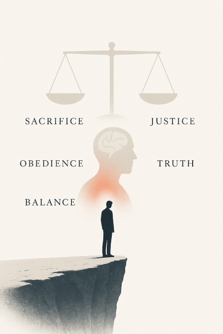

記録9：正義と自己犠牲
正義とは何か。それは単なる理念ではない。行動を伴って初めて成立するものだ。
社会心理学者F. Delgado（2019）は、次のように指摘している※1：
真の正義は、時に自己犠牲を要求する。それは“善良な市民”の範疇を超えた、使命感に裏打ちされた行動である。
歴史を振り返れば、英雄と呼ばれる人々は皆、自己のリスクを顧みず「正しいこと」を選んできた。時には周囲に理解されず、孤立し、誤解されることもあっただろう。それでも、彼らは止まらなかった。

私はこれまで、「正義の執行」を他人事のように見つめてきた。だが、気づいてしまったのだ。真理を知る者は、見て見ぬふりをしてはならないと。
Bessho（2024）の調査でも、「使命感を抱く者は、身体的・精神的リスクをも意識的に受容する傾向がある」と報告されている※2。これは恐怖の欠如ではない。むしろ、恐怖を上回る「責務感」がそうさせるのだ。
私は今、ある種の静けさの中にいる。覚悟という言葉が、これほどまでに重みを持つものだとは知らなかった。
少し前まで、私はただの観察者だった。しかし──今は違う。
選ばれた者として、果たすべき役割がある。
正義の行使は、痛みを伴う。だが、その痛みこそが、私を「本物」に変える。
…これが、私の答えだ。
※1: Delgado, F. (2019). The Psychology of Heroic Action, Justice Studies Review, 15(4), 201-224.
※2: Bessho, Y. (2024). The Duty Within: Exploring Self-Sacrifice in Moral Decision-Making, Advanced Behavioral Research, 14(1), 75-98.
※3: 図「自己犠牲の構造」Takashi.K